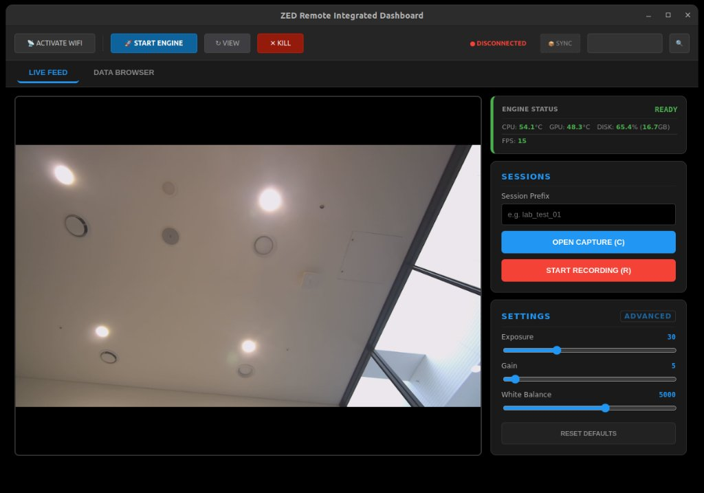

Overview
화면 없는 장비에서
화면 없는 장비에서
프레임을 잃지 않고 수집한다
디스플레이가 없는 Jetson에 연결한 스테레오 카메라로 현장 데이터를 모으기 위해, 노트북의 대시보드에서 장비의 수집 엔진을 배포하고 실행하고 상태를 확인하는 도구를 만들었습니다.
Python · PySide6 · OpenCV · ZED SDK · SSH · rsync

노트북 대시보드 · 실시간 화면, 엔진 상태, 온도와 저장 공간, 세션과 카메라 설정
Problem
현장에서는
현장에서는
장비 안을 볼 수 없다
장비에 화면이 없어서 수집이 제대로 되고 있는지 현장에서 바로 알 수 없었습니다. 문제를 발견하는 시점이 사무실로 돌아온 뒤라면, 그 촬영은 다시 해야 합니다.
직접 연 SSH 세션은 네트워크가 끊기면 진행 중인 캡처도 함께 멈춘다
수집 중 발열, 남은 저장 공간, 프레임이 실제로 저장되는지를 확인할 수 없다
장비마다 코드와 의존성을 맞추는 일이 매번 반복된다
Design Decision
빠르게 찍는 것보다
빠르게 찍는 것보다
빠짐없이 남기는 것
저장이 밀릴 때 프레임을 버리면 겉으로는 FPS가 유지되지만, 데이터에는 빈 구간이 생깁니다. 그래서 프레임을 버리지 않고 캡처가 기다리도록 했습니다.
- 저장 대기: 저장 큐에 상한을 두고, 가득 차면 캡처 루프가 기다림. 저장이 느려지면 FPS가 떨어지는 대신 프레임이 빠지지 않음
- 메모리 보호: 큐 상한으로 고해상도 이미지가 메모리에 끝없이 쌓이지 않게 함
- 자원 집중: 점군, 위치 추적처럼 무거운 기능은 빼고 이미지 수집에 장비 자원을 집중
- 메타데이터: 세션을 닫을 때 프레임 수와 카메라 설정을 fsync로 디스크에 확정
saver.py (요약)
# Bounded queue: about 100 stereo frames at most in RAM
self.save_queue = queue.Queue(maxsize=100)
def save_frame(self, left_raw, right_raw):
...
# Block instead of dropping frames when the queue is full
self.save_queue.put(("img", l_path, left_raw.copy()), block=True)
self.save_queue.put(("img", r_path, right_raw.copy()), block=True)
def _saver_worker(self):
while True:
task_type, path, data = self.save_queue.get()
if task_type == "img":
cv2.imwrite(path, data) # releases the GIL
self.save_queue.task_done()
Remote Operation
배포부터 정지까지
배포부터 정지까지
대시보드에서
현장에서 터미널을 열지 않아도 되도록, 반복되던 손작업을 버튼 하나로 묶었습니다.
01
배포와 설치
rsync로 최신 코드를 장비에 동기화하고, 처음 한 번은 필요한 라이브러리를 원격으로 설치
02
분리된 실행
수집 엔진을 백그라운드로 분리해 실행. 노트북 연결이 끊겨도 캡처 세션은 유지
03
상태 확인
오프라인, 네트워크 연결, 서비스 실행의 3단계로 연결 상태를 구분하고, 온도와 저장 공간을 실시간 표시
04
안전 정지
저장 공간이 1GB 아래로 떨어지면 진행 중인 세션을 정리하고 엔진을 멈춤
Result
터미널 없이
터미널 없이
현장 수집을 관리한다
현장에서 터미널을 열지 않고도 원격 배포, 실행, 상태 확인을 할 수 있게 하나의 대시보드로 묶었습니다.
| 구분 | 내용 |
|---|---|
| 구현 | 장비 배포, 원격 실행, 3단계 연결 상태, 온도와 저장 공간 감시, 세션과 카메라 설정 관리 |
| 구현 | 저장이 밀리면 캡처가 기다리는 수집 파이프라인과 세션 메타데이터 확정 저장 |
| 판단 | 세션 메타데이터와 설정 파일은 fsync로 디스크에 확정하고, 이미지는 쓰기 속도를 위해 일반 저장으로 처리 |